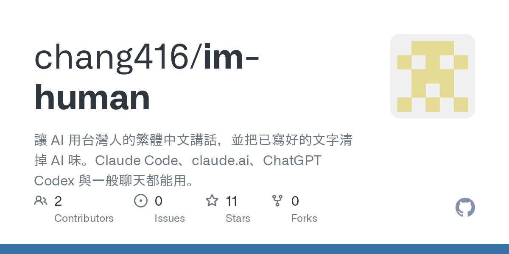

Threads｜im-human：台灣繁中／英文去 AI 味 Claude Skill 與 Codex 寫作合約

為什麼保存
這則 Threads 值得歸檔，是因為它把「去 AI 味」從一段口訣或單次 prompt，整理成可安裝、可分享、可版本控制的 skill/repo。對欒帥的 AI 教學與 Hermes 工作流來說，重點不是承諾一定能騙過 AI 偵測器，而是把「台灣繁中語氣、保真改寫、禁用翻譯腔、避免中國用語混入」寫成可重複載入的規則。
這也補上現有 AI 寫作工具常見缺口：很多中文 humanizer 只說「中文」，但沒有明確鎖定台灣繁體中文的詞彙、語氣與場景；`im-human` 的定位正是「給台灣人的繁中與英文」。
Threads 可見重點
@aicodex_invent 主貼文說明：
> 一個給台灣人繁體中文跟英文專用的文章潤飾 skill。作者主張很多 AI 文字有明顯 AI 味，GitHub 上相關 skill 又容易混入中國用語；因此開源 `im-human`，在 Claude / Codex 中用一個 `/` 或 chat 指令呼叫，讓同一個 prompt 產生的文字 AI 率從 88% 到 0%。
作者留言補充 GitHub 連結，並說這個 skill 在一個對話框啟用後，後續會持續套用規則；也希望使用者 star / 下載，協助作者申請 Codex for Open Source。
GitHub / README 查核
GitHub API 與 README 查核結果：
| 項目 | 查核結果 |
|---|---|
| Repo | `chang416/im-human` |
| 描述 | 讓 AI 用台灣人的繁體中文講話，並把已寫好的文字清掉 AI 味。Claude Code、claude.ai、ChatGPT Codex 與一般聊天都能用。 |
| 授權 | MIT |
| 主要語言 | Python |
| 建立時間 | 2026-08-14 |
| stars / forks | 查核時約 11 stars、0 forks |
| topics | `aiwriting`、`chatgpt`、`claude-skills`、`codex`、`prompt-engineering`、`taiwan`、`traditional-chinese` |
README 的定位很清楚：
- 只做兩種語言：台灣繁體中文與英文，不支援簡體中文場景。
- 中文觸發詞是「我是人」，例如「開啟我是人」。
- 可用於 Claude Code、claude.ai 網頁版／桌面版、ChatGPT Codex、一般 ChatGPT。
- 一般 ChatGPT 沒有 skill 系統，因此 repo 另外提供 `prompts/` 中的自訂指令／專案指示貼上版。
兩個模式
### 1. 語態模式
啟用後會要求 AI 後續輸出遵守一份「像台灣人說話」的合約：
- 台灣詞彙：影片不是視頻、軟體不是軟件、資訊不是信息、品質不是質量。
- 結論先講，句子長短不齊，可使用「其實」「老實說」「蠻」等自然口語。
- 禁止常見 AI 開場白與空泛路標，例如「當然！」、「這是一個很好的問題」、「首先／其次／最後」成套出現。
- 禁止抽象拔高與翻譯腔，例如「賦能」「打造」「本質上」「進行了討論」「扮演著重要角色」。
- 英文也有對應規則：預設 contractions，避免 `delve`、`seamless`、`leverage`、`It's worth noting` 等 AI 高頻詞。
README 也強調底線：像人是指說話方式，不是假裝有情緒、不編故事、不把不確定講成確定。
### 2. 編輯模式
編輯模式用於「幫我把這段去 AI 味」。它的最高原則是「不發明」：
- 不補原文沒有的數字、來源、經驗或情緒。
- 缺乏具體內容時標註「需作者補充」，而不是編漂亮話填洞。
- 改寫前先保護價格、日期、數字、專名、URL、程式碼、引號原話、退費與法律條款、作者立場強度。
- 改完逐項回讀，避免把「我反對」改成「我持保留態度」。
這點對課程、論文、報名文案、商務內容特別重要：人味不是把文字改得更花，而是保留事實與立場，同時降低罐頭感。
離線掃描器
Repo 內含 `scripts/audit_ai_flavor.py`，可在本機離線掃描文章，不需要 API key：
`python scripts/audit_ai_flavor.py 你的文章.md`
它會抓二分對照殼、機械先後順序、抽象包裝詞、助理路標、講義腔、進行體、翻譯腔、「隨著⋯的發展」開場、整齊編號、段落長度過於均勻、結尾假互動提問，以及英文層的 AI 高頻詞。`--json` 可給機器讀，`--fail-on-review` 可放進 CI gate。
安裝與使用脈絡
Claude Code / Codex 本機資料夾可 clone 到 skills 目錄：
- Claude Code：`~/.claude/skills/im-human`
- Codex：README 說可把 `.claude` 換成 `.codex`
claude.ai 網頁版／桌面版則可把 `im-human/` 資料夾打包成 zip，上傳到 Customize → Skills。README 特別提醒 zip 最上層必須是 `im-human/` 這層資料夾，不能直接把 `SKILL.md` 放在 zip 根目錄。
一般 ChatGPT 則使用 repo 提供的 `prompts/chatgpt-custom-instructions.md` 或 `prompts/chatgpt-project.md`。
對欒帥的應用建議
這個 repo 可放進「AI 寫作／Prompt 工程／台灣繁中語氣」案例：
- 把「去 AI 味」拆成可檢查的語言規則，而不是只靠感覺。
- 把台灣繁中詞彙與英文 AI 高頻詞同時納入，適合雙語內容工作流。
- 用離線 scanner 當回歸檢查，讓團隊或課程作業能先抓出罐頭句型。
- 將 `im-human` 與 Hermes / Codex 的技能化工作流連在一起：不是每次重貼一段 prompt，而是把語氣合約變成可安裝資產。
風險與限制
- Threads 提到「AI 率 88% 到 0%」是社群示範，不應視為穩定保證。AI 偵測器是黑盒、版本會變，而且常誤判人類文章。
- README 也明確說：這個 skill 不幫你騙 AI 偵測器，目標是讓文字自然、事實不被動過。
- 去 AI 味不等於更好內容；若原文缺少觀察、數字、案例或判斷，skill 應提示作者補充，而不是替作者編。
- Claude / Codex / ChatGPT 的 skill 或指令支援方式不同，實際啟用效果要以當前產品介面為準。
一句話摘要
`im-human` 的價值不是「保證 AI 偵測器 0%」，而是把台灣繁中／英文的自然語氣、保真改寫與反 AI 腔規則，做成 Claude / Codex / ChatGPT 都能帶走的開源寫作 skill。